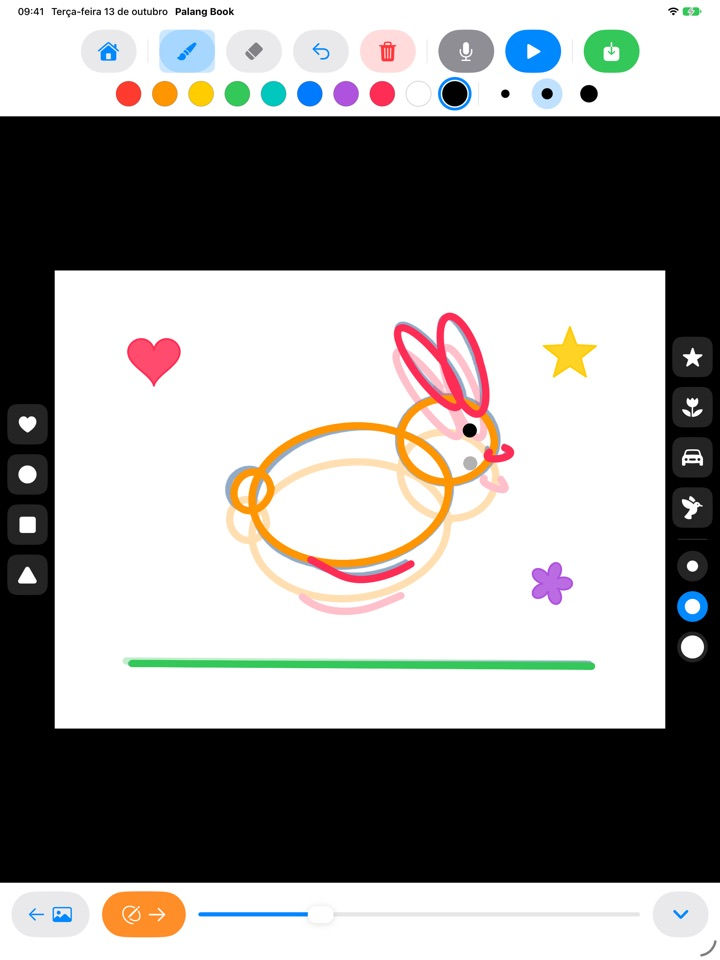
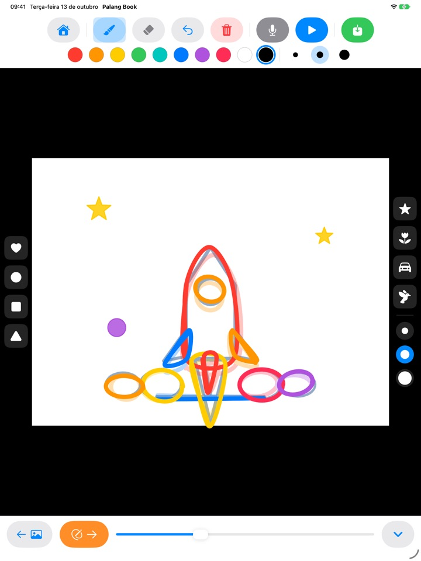
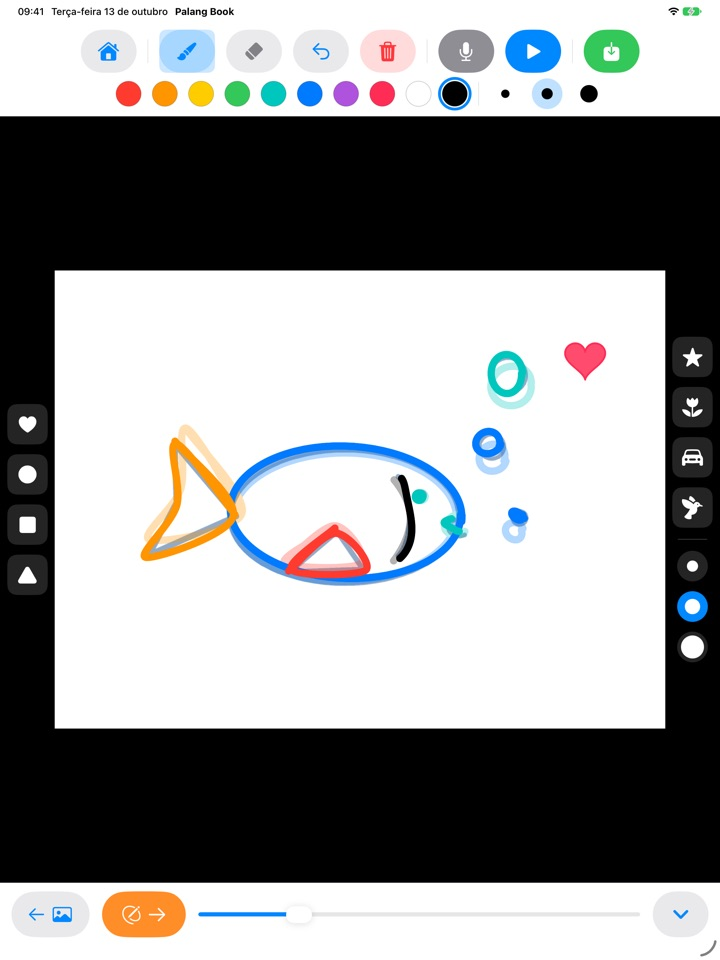
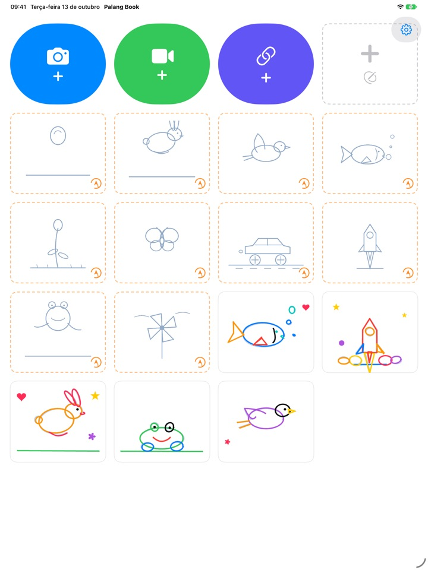

Decalque as linhas
e veja ganhar vida
A criança decalca um guia clarinho, uma página de cada vez. Ao tocar em reproduzir, o guia some e só os traços dela continuam, em movimento. Todos os botões são desenhos, então dá para brincar sozinho antes mesmo de saber ler.
Para iPad. 3 conjuntos para decalcar são grátis.

Desenhe algumas páginas
Desenhe alguma coisa e toque na seta laranja para ir à próxima página. A página anterior aparece clarinha por baixo. Depois de duas ou três páginas, toque no botão azul de reproduzir.
Não é uma pena um desenho tão lindo ficar parado?
Animar é desenhar quase a mesma coisa várias vezes, mudando só um pouquinho, e sozinha a criança nem sabe por onde começar. O Palang Book coloca por baixo um guia clarinho que já traz o movimento, e ela só precisa seguir a linha. No instante em que toca em reproduzir, o desenho dela se mexe.
Siga a linha e pronto: animação
Uma bola quicando, um coelho pulando, um passarinho voando, um peixe nadando, uma flor desabrochando, uma borboleta, um carro correndo, um foguete, um sapo e um cata-vento. Cada conjunto vem com cerca de 20 páginas de guia.
A página anterior aparece clarinha por baixo para facilitar a próxima, e na hora de reproduzir o guia some e só o desenho da criança se mexe.

Carimbos e dez cores
Coração, círculo, quadrado, triângulo, estrela, flor, carro e passarinho: é só tocar para carimbar. Carimbos e pincéis têm três tamanhos cada, com dez cores para escolher.
Com a borracha e o desfazer, errar não é problema. Dá para desenhar com o dedo ou com o Apple Pencil.

Sobre seus próprios vídeos ou no papel em branco
Abra um vídeo que você gravou ou um do app Fotos e decalque por cima. Escondendo o fundo, só as cenas desenhadas aparecem, uma depois da outra, sobre o papel branco. Também tem um flipbook em branco, sem guia nenhum.
Toque no microfone para gravar a voz da criança junto, e salve a obra pronta como vídeo no Fotos para compartilhar com a família.

Três passos para começar
- 1
Toque num cartão de guia
Os cartões com borda laranja pontilhada na tela inicial são para decalcar.
- 2
Desenhe e vire a página
A seta laranja leva para a próxima página.
- 3
Toque em reproduzir
Toque no botão azul de reproduzir e o desenho se mexe.
O que cada botão faz
- Cartão laranja pontilhado
- Começar um conjunto para decalcar
- Cartão cinza pontilhado
- Flipbook em branco
- Câmera azul
- Desenhar sobre um vídeo que você gravar
- Vídeo verde
- Abrir um vídeo do Fotos
- Link anil
- Colar o link de um arquivo de vídeo
- Seta laranja
- Próxima página
- Reproduzir azul
- Reproduzir a animação, tocar de novo para parar
- Seta curva
- Desfazer o último traço
- Lixeira vermelha
- Apagar a página inteira (o desfazer traz de volta)
- Microfone
- Gravar a voz enquanto a animação se repete
- Ícone de vídeo
- Esconder o fundo do vídeo (com listras rosa, só os desenhos)
- Salvar verde
- Salvar como vídeo no Fotos
Para apagar uma obra, toque e segure o cartão dela na tela inicial. Os desenhos, a gravação e o vídeo importado são apagados junto.
Bastante coisa para testar de graça. O Acesso vitalício, se gostar.
Grátis
- 3 conjuntos para decalcar (bola, coelho e flor)
- Guarde 3 obras
- Abra 1 vídeo
- Flipbooks em branco de até 10 páginas
- Gravação de voz de até 15 segundos
- Carimbos, cores, pincéis e salvar no Fotos
Acesso vitalício
- Todos os conjuntos para decalcar, inclusive os que vierem
- Obras, páginas, vídeos e tempo de gravação sem limite
- Sem o cartão do Palang Book no fim dos vídeos salvos
Pagamento único, não é assinatura. Funciona com o Compartilhamento Familiar em todos os iPads da família.
Os vídeos salvos de graça terminam com um cartãozinho do Palang Book. Se você já usava o Palang Book antes do Acesso vitalício, tudo continua liberado para você.
Perguntas frequentes
Como funcionam os guias?
As linhas azul-claras são o guia. A criança decalca por cima e, ao tocar em reproduzir, o guia some e só os traços dela se mexem. Depois de umas 20 páginas, a animação fica pronta.
Quero reproduzir e salvar só o desenho, sem o vídeo.
Num projeto com vídeo, toque no ícone de vídeo na barra de cima até ele ficar rosa com listras. Assim, ao reproduzir e ao salvar, só aparece o desenho sobre fundo branco. Só as cenas desenhadas são reproduzidas, então poucos desenhos sobre um vídeo longo já viram uma animação curtinha.
Onde fica salvo o vídeo pronto?
Toque no botão verde de salvar, na ponta direita da barra, e um vídeo mp4 é salvo no Fotos. Na primeira vez, permita o acesso às fotos.
Como coloco uma voz?
Toque no botão do microfone para gravar enquanto a animação se repete, e toque em parar para terminar. Gravar de novo substitui a gravação anterior. Ao salvar, a voz vai junto no vídeo.
O link de um vídeo não abre.
Confira a conexão com a internet e se o endereço leva direto a um arquivo de vídeo (terminado em .mp4 ou parecido). Links de páginas de sites de compartilhamento de vídeos não abrem. Para respeitar os direitos autorais, use vídeos gravados por você ou de uso livre.
A palma da mão encosta e faz riscos.
A seta curva apaga o último traço, e a lixeira vermelha apaga a página inteira (o desfazer traz de volta). Se acontecer muito, mande um e-mail que a gente ajuda.
Por que aparece uma conta antes da tela de compra?
Para a criança não chegar sozinha à tela de compra. Quando ela toca em algo bloqueado, aparece um cadeado grande com o aviso "Mostre para um adulto", e a tela de compra só abre depois que um adulto responde a uma multiplicação.
Como restauro minha compra?
Toque na engrenagem no canto superior direito da tela inicial, escolha Acesso vitalício, responda à pergunta para adultos e toque em Restaurar compras. É preciso estar conectado com a mesma Conta Apple usada na compra.
Como envio feedback pelo app?
Toque na engrenagem na tela inicial e escolha Enviar feedback. Dá para anexar uma captura de tela e, se quiser resposta, deixar nome e e-mail. Pedimos que o feedback seja enviado por um adulto responsável.
Vocês coletam informações sobre a criança?
Não. O Palang Book não coleta nenhum dado pessoal, e os desenhos e gravações ficam no seu iPad. Veja a Política de Privacidade para mais detalhes.
Dúvidas ou algum problema? Mande um e-mail para mizzking75@gmail.com. Costumamos responder em 2 a 3 dias.